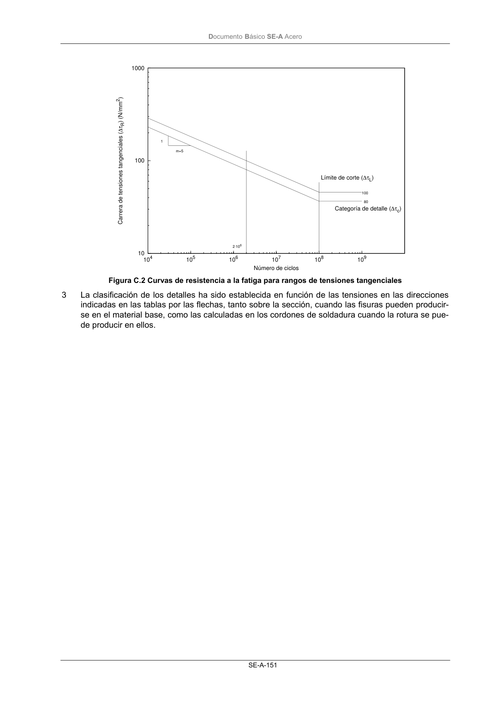

DB-SE-A Acero · edición 2007-10-23 · capa oficial
Documento DB-SE-A-oficial · SHA-256 del PDF 9ed9ea694aabfbda3bfbbef40dfe9223fde05d13c35bc2ba9751e5a96a22a64f
Página física 153 de 168.
Copia fiel del PDF fuente · Fuente oficial
Ficha de la disposición en la fuente oficial
Formato: Texto de la página (Markdown)
Documento Básico SE-A Acero SE-A-151 10 100 1000 104 105 106 107 108 109 Carrera de tensiones tangenciales (∆τR) (N/mm2) Número de ciclos Límite de corte (∆τL) Categoría de detalle (∆τc) 1 m=5 2·106 100 80 Figura C.2 Curvas de resistencia a la fatiga para rangos de tensiones tangenciales 3 La clasificación de los detalles ha sido establecida en función de las tensiones en las direcciones indicadas en las tablas por las flechas, tanto sobre la sección, cuando las fisuras pueden producir- se en el material base, como las calculadas en los cordones de soldadura cuando la rotura se pue- de producir en ellos.
